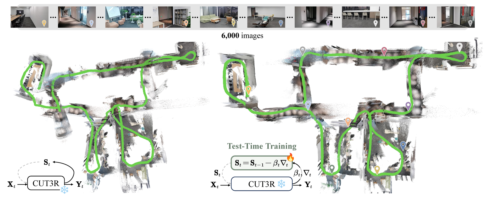
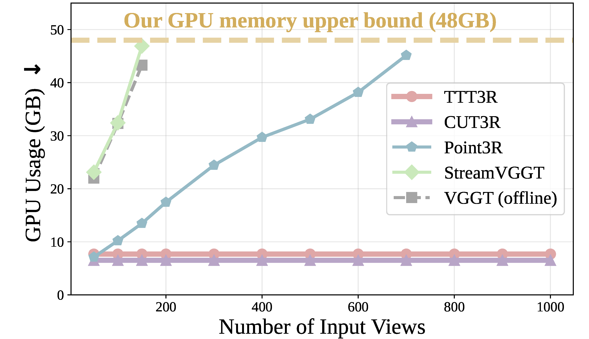
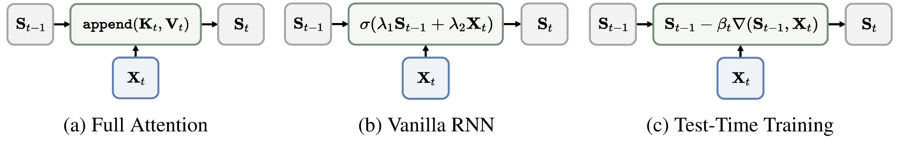
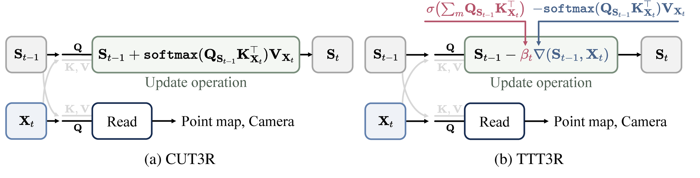
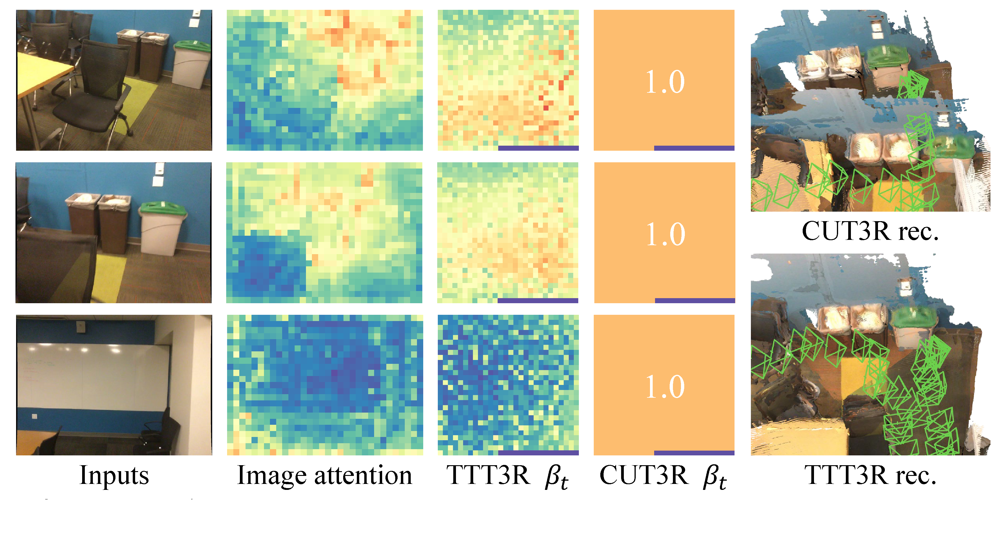
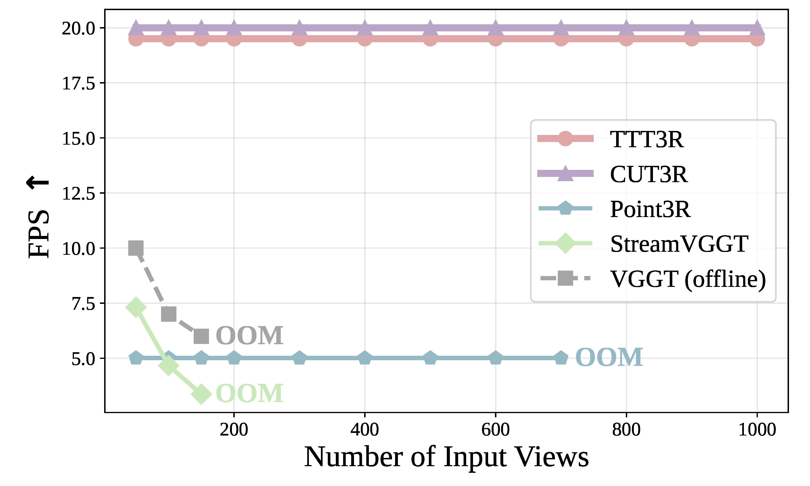
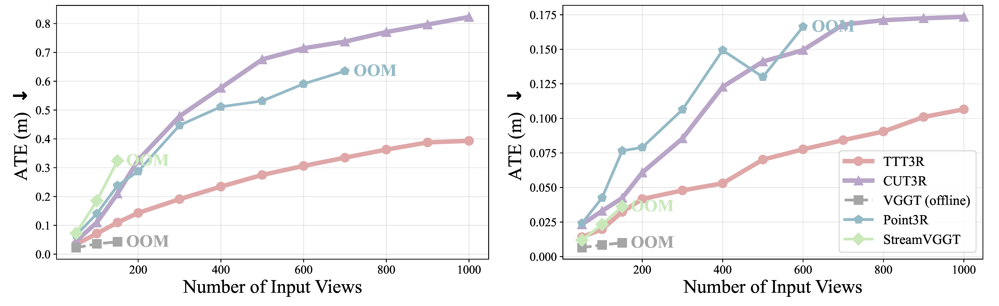
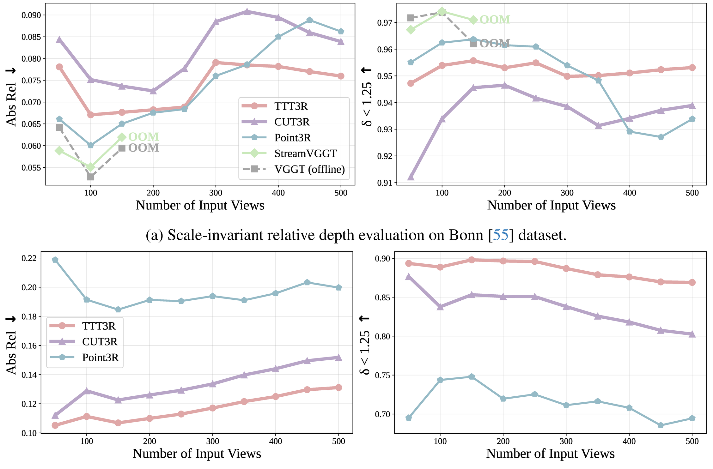
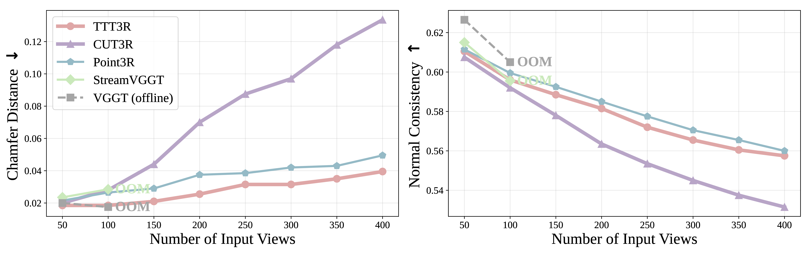

핵심 요약
TTT3R은 recurrent 3D reconstruction의 state update를 test-time online learning으로 재해석하고, alignment confidence를 token별 learning rate로 사용한다.
TTT3R은 CUT3R식 constant-memory streaming을 유지하되, 모든 state를 똑같이 덮어쓰는 대신 confidence-guided per-token update weight \(\beta_t\)로 memory retention과 adaptation을 조절한다.
TTT View
recurrent state를 test-time에 갱신되는 fast weight로 해석.
Learning Rate
memory-observation alignment confidence에서 token별 learning rate 계산.
Training-free
model fine-tuning 없이 inference-time update rule로 plug-in 적용.
Long Context
constant memory를 유지하면서 long-horizon pose/depth/reconstruction 안정성 개선.
VGGT / Fast3R
history 보존 강함, memory 증가.
CUT3R
constant memory, long-context forgetting.
Point3R
forgetting 완화, memory 비용 증가.
Confidence Gate
confidence-gated write로 효율 유지.
논문 상세 정리
아래부터는 기존 논문 내용을 최대한 담은 상세 해석이다. 핵심 흐름에서 벗어나는 배경지식, notation, 부가 자료는 접어두었다.
Problem: 왜 recurrent 3D reconstruction이 긴 sequence에서 무너지는가
TTT3R의 출발점은 간단하다. CUT3R류 recurrent 3D reconstruction model은 linear-time, constant-memory inference를 제공하지만, training context length를 넘어가는 긴 video stream에서는 state가 점점 현재 observation에 끌려가며 forgetting과 drift가 누적된다.
논문은 이 문제를 “state를 어떻게 갱신할 것인가”로 다시 묻는다. 즉, state \(S_t\)를 단순 hidden state가 아니라 test-time에 입력 context로부터 갱신되는 fast weight로 해석한다.

문제는 “recurrent state를 쓰는가”보다, 긴 sequence에서 state를 얼마나 강하게 갱신할 것인가에 있다.
history 보존은 좋지만 view 수가 늘면 memory/computation이 증가.
fixed state로 효율적이지만 새 observation을 너무 강하게 반영.
long rollout에서 forgetting, overfitting, unexplored state distribution 발생.
confidence-guided learning rate로 state plasticity를 token별 조절.

TTT3R은 memory를 더 쌓는 방향이 아니라, 고정 크기 implicit state를 더 잘 업데이트하는 방향을 택한다.
| 계열 | 장점 | TTT3R 관점 |
|---|---|---|
| VGGT / Fast3R | long-range dependency 보존 | full attention이라 긴 stream에서 memory cost가 병목. |
| CUT3R | linear-time, constant-memory streaming | state update가 사실상 \(\beta_t=1\)인 강한 write로 작동. |
| Point3R | explicit point memory로 forgetting 완화 | view 수가 늘수록 memory가 증가. |
| TTT3R | training-free confidence-guided update | fixed memory를 유지하면서 update plasticity를 token별로 조절. |
Mechanism: state update를 test-time learning으로 어떻게 바꾸는가
방법론의 핵심은 recurrent pointmap regression model을 update/read operation으로 정리한 뒤, CUT3R의 recurrent update를 TTT-style gradient descent와 연결하는 것이다.

TTT3R은 “무엇을 쓸지”보다 “얼마나 강하게 쓸지”를 token별로 조절한다.
| 단계 | 역할 | 핵심 의미 |
|---|---|---|
| Sequence formulation | image token, state, readout을 통일 표현 | 모델 차이를 update/read rule 차이로 비교 가능. |
| Full attention | history key/value를 append | 보존은 강하지만 cost가 커짐. |
| RNN / CUT3R | fixed state를 cross-attention으로 update | 효율적이지만 every-step overwrite 성향. |
| TTT3R | alignment confidence를 \(\beta_t\)로 사용 | high-confidence token만 더 강하게 update. |
Full attention vs. recurrent state
Eq. (3)은 memory 사용량을 \(O(1)\)로 유지하지만, softmax attention이 observation-token dimension에서 합이 1이 되도록 normalize되기 때문에 새 입력을 매번 강하게 반영하는 구조가 된다.
TTT 관점으로 보는 state update

이 해석의 핵심은 CUT3R이 confidence가 낮은 region에서도 state를 강하게 갱신한다는 점이다. TTT3R은 여기에 per-token learning rate를 넣어 memory retention과 adaptation의 균형을 만든다.
Confidence-guided learning rate
여기서 \(m=\{1,\ldots,h\}\times\{1,\ldots,w\}\)는 image-token spatial index이고, 논문은 \(\sum_m\)을 normalized mean으로 둔다. 결과 \(\beta_t\in\mathbb{R}^{n\times1}\)는 state token별 scalar로 channel dimension에 broadcast된다.

따라서 TTT3R은 backbone을 fine-tuning하지 않고도 CUT3R에 plug-in될 수 있다. 학습된 파라미터를 바꾸는 것이 아니라, inference 중 state update coefficient를 바꾸는 training-free intervention이다.
Evidence: 어떤 task에서 검증했는가
평가는 camera pose estimation, video depth estimation, 3D reconstruction을 중심으로 구성된다. Baseline은 CUT3R, Point3R, StreamVGGT, VGGT이며, 모든 모델은 single 48GB NVIDIA GPU에서 50-1000 input views로 평가된다.
TTT3R의 주장은 “CUT3R 수준의 runtime/memory를 유지하면서 long-context drift와 forgetting을 줄인다”는 것이다.
CUT3R과 같은 recurrent backbone이라 약 20 FPS, 약 6GB memory 수준 유지.
TUM Dynamics / ScanNet에서 CUT3R 대비 ATE를 크게 낮춤.
KITTI / Bonn long sequence에서 relative/metric depth 안정성 확인.
7-Scenes에서 long view 수에도 Chamfer Distance와 Normal Consistency 유지.
Runtime / Memory

Pose Estimation

Video Depth Estimation

3D Reconstruction


Usage / Limits: 언제 유용하고 어디서 조심해야 하나
TTT3R은 이미 recurrent state를 가진 online reconstruction model에 가장 자연스럽게 붙는다.
| 구분 | 상황 | 해석 |
|---|---|---|
| Use | long video stream을 reset 없이 처리해야 하는 경우 | constant memory를 유지하면서 forgetting을 완화. |
| Use | CUT3R류 recurrent backbone을 이미 사용하는 경우 | training-free update rule이라 plug-and-play 적용 가능. |
| Caution | offline full-attention reconstruction accuracy가 최우선인 경우 | VGGT 같은 full-history method를 항상 넘는 것은 아님. |
| Limit | state forgetting 자체를 완전히 해결해야 하는 경우 | 논문도 forgetting을 완화하지만 완전히 제거하지는 않는다고 밝힘. |
Conclusion: TTT3R이 제안하는 관점
TTT3R은 recurrent 3D reconstruction의 state update를 단순 hidden-state transition이 아니라 test-time online learning으로 재해석한다. 이 관점에서는 state가 fast weight이고, cross-attention alignment confidence가 token별 learning rate 역할을 한다.
핵심은 모델을 다시 학습하지 않고도 update rule만 바꿔 long-context extrapolation을 개선한다는 점이다. 즉, TTT3R은 더 큰 memory를 쓰는 대신, 고정된 memory를 더 신중하게 갱신하는 방법을 제안한다.
느낀점
(진행중...)
향후 계획
(진행중...)
Problem: why recurrent 3D reconstruction breaks on long sequences
TTT3R starts from a practical failure mode: recurrent 3D reconstruction models such as CUT3R provide linear-time, constant-memory inference, but their fixed state can forget useful history and accumulate drift when rolled out beyond the training context length.
The paper reframes the question as a state-update problem. The state \(S_t\) is treated not as an ordinary hidden state, but as a fast weight updated online during test time.
The issue is not only whether a model uses recurrent state, but how strongly that state should be updated over long sequences.
Preserves history, but memory and compute grow with views.
Efficient fixed-state streaming, but new observations can overwrite history.
Long rollouts suffer from forgetting, overfitting, and unexplored states.
Controls state plasticity with confidence-guided token-wise learning rates.
TTT3R improves fixed implicit memory instead of adding more explicit memory.
| Family | Strength | TTT3R reading |
|---|---|---|
| VGGT / Fast3R | Strong long-range dependency modeling. | Full attention becomes memory-heavy for long streams. |
| CUT3R | Linear-time, constant-memory streaming. | The update behaves like a strong write with \(\beta_t=1\). |
| Point3R | Explicit point memory reduces forgetting. | Memory grows with views. |
| TTT3R | Training-free confidence-guided update. | Keeps fixed memory while controlling token-wise plasticity. |
Mechanism: how does it turn state update into test-time learning?
The method first expresses pointmap-oriented reconstruction as an update/read sequence model, then connects CUT3R's recurrent update to TTT-style gradient descent.
TTT3R controls how strongly to write, not only what value to write.
| Step | Role | Meaning |
|---|---|---|
| Sequence formulation | Unifies image token, state, and readout. | Model families can be compared through update/read rules. |
| Full attention | Appends history key/value pairs. | Preserves history but increases cost. |
| RNN / CUT3R | Updates a fixed state with cross-attention. | Efficient but tends to overwrite. |
| TTT3R | Uses alignment confidence as \(\beta_t\). | Updates high-confidence tokens more strongly. |
Full attention vs. recurrent state
Eq. (3) keeps memory at \(O(1)\), but the softmax output writes new observations strongly into the state, making long-context forgetting likely.
State update through the TTT lens
CUT3R writes even low-confidence observations strongly into the state. TTT3R introduces a per-token learning rate to balance retention and adaptation.
Confidence-guided learning rate
Here, \(m=\{1,\ldots,h\}\times\{1,\ldots,w\}\) indexes image tokens, and the paper treats \(\sum_m\) as a normalized mean. The resulting \(\beta_t\in\mathbb{R}^{n\times1}\) is broadcast along the channel dimension.
Thus, TTT3R can be plugged into a frozen CUT3R backbone. It changes the inference-time state update coefficient, not the trained network parameters.
Evidence: which tasks test the claim?
The evaluation covers camera pose estimation, video depth estimation, and 3D reconstruction. Baselines are CUT3R, Point3R, StreamVGGT, and VGGT, tested with 50-1000 input views on a single 48GB NVIDIA GPU.
The central claim is that TTT3R reduces long-context drift and forgetting while keeping CUT3R-like runtime and memory.
Keeps about 20 FPS and roughly 6GB memory like CUT3R.
Reduces ATE on TUM Dynamics and ScanNet compared with CUT3R.
Improves long-sequence relative and metric depth stability on KITTI and Bonn.
Maintains Chamfer Distance and Normal Consistency on 7-Scenes.
Runtime / Memory
Pose Estimation
Video Depth Estimation
3D Reconstruction
Usage / Limits: when is TTT3R useful?
TTT3R is most natural when the system already has a recurrent state.
| Type | Situation | Reading |
|---|---|---|
| Use | long video streams without resets | reduces forgetting while keeping constant memory. |
| Use | CUT3R-like recurrent backbones | training-free update rule can be plugged in. |
| Caution | offline full-history accuracy is the priority | does not always beat full-attention methods such as VGGT. |
| Limit | forgetting must be fully eliminated | the paper mitigates forgetting but does not claim to solve it completely. |
Conclusion: what viewpoint does TTT3R add?
TTT3R reinterprets recurrent 3D reconstruction state update as test-time online learning. The state is a fast weight, and cross-attention alignment confidence becomes a token-wise learning rate.
The important part is that the model is not retrained. TTT3R improves long-context extrapolation by changing how fixed memory is updated, rather than by adding more memory.
Personal Notes
(In progress...)
Next Steps
(In progress...)
Comments